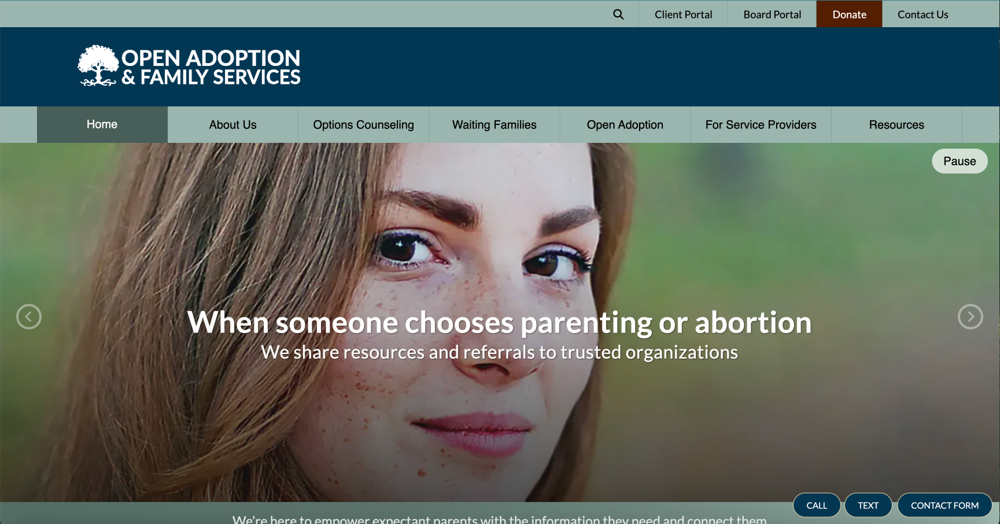
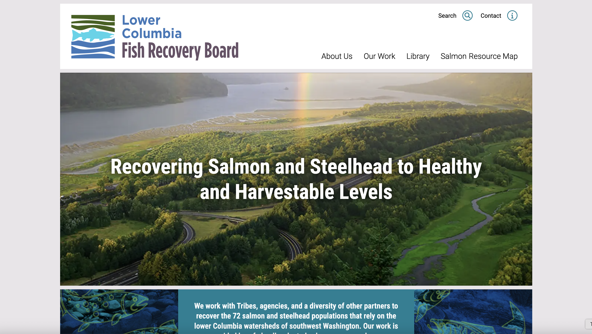
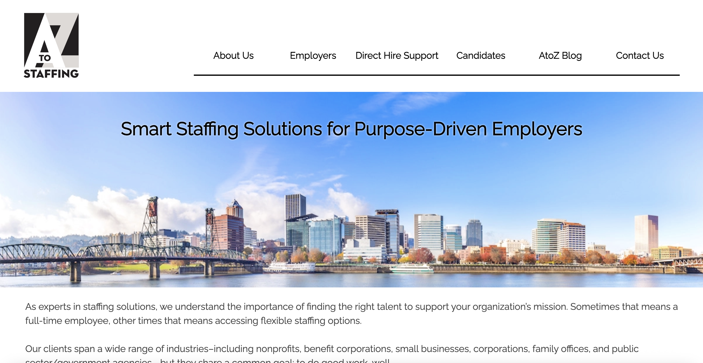

About Me
Web developer and digital consultant with expertise in front-end development, project management, and technology solutions for businesses and nonprofits. Skilled at translating complex problems into actionable solutions, optimizing team workflows, and delivering engaging user experiences through innovative web solutions.
Experienced in building websites from the ground up using custom HTML and CSS, along with CMS platforms including ExpressionEngine, Wix Editor X, Webflow, and Shopify, and additional experience with Joomla and WordPress. Focused on creating accessible, responsive websites and finding practical solutions to technical and workflow challenges. Experience founding and operating an independent e-commerce venture has also provided firsthand insight into the practical needs and challenges of running a small business.
Recent Experience
Founder & Web Developer, Independent E-Commerce Venture | June 2025 - Present | (Remote)
• Built and customized a Shopify storefront using Liquid, custom filtering and taxonomy architecture, and metafield-driven product data structures.
• Led performance and accessibility optimization work, including Lighthouse auditing, image compression workflows, color-contrast testing, and WCAG-compliant mobile tap-target sizing via custom Liquid edits.
• Manage multi-channel sales operations, including platform-specific pricing strategy, cross-listing workflows, shipping and fulfillment integration, and domain/DNS management.
• Manage inventory and product photography, using AI-assisted workflows and graphics editing programs to help shape final product designs, alongside creative direction for brand identity and marketing materials.
• Established and manage core business operations independently, including registered agent and privacy protection, licensing, tax compliance, and business banking, informing hands-on website audits that go beyond automated "SEO report" bots.
Web Developer and Consultant at NetRaising | March 2024 - June 2025 | (Remote)
• Built and launched responsive websites in ExpressionEngine for nonprofit clients, combining CMS templating (tags, conditional logic, custom fields) with custom built front-end development (HTML, CSS, JavaScript) and MachForm integration to deliver client-requested features.
• Solved complex design and technical challenges by implementing custom features while prioritizing web accessibility (WCAG standards), SEO, and performance optimization, consistently achieving high scores using Lighthouse, color contrast testing, and other key metrics.
• Collaborated with designers and stakeholders to produce mobile, tablet, and desktop-ready websites, as well as provided one-on-one client training and support to ensure a smooth handoff and ongoing site management.
Website & Technology Manager at Seaside Sustainability | Jan 2023 - July 2023 | (Remote from Seattle, WA to Gloucester, MA)
• Led a Web & Tech team of 5-8, overhauling and restructuring the department following approximately six months without dedicated leadership, implementing Agile and Scrum frameworks along with kanban to establish organized workflows and a consistent delivery cadence.
• Served as a Department Manager, Scrum Master, Product Owner, Front-end Web Developer, Project Manager, and a liaison between different departments in order to facilitate and support the needs of a diverse, globally remote team for a large non-profit organization.
• Rapidly and efficiently acquired proficiency in using a diverse range of software and tools, such as Trello, Wix Editor X, Zapier, Google Workspaces, Miro, Figma, Canva, MailerLite, Little Green Light, and Airtable, among other applications.
• Guided and mentored interns in implementing responsive web design best practices and effectively utilizing tools to accomplish tasks.
• Collaborated with stakeholders to perform heuristic evaluations, effectively identifying user needs and pain points, then analyzed the feedback to implement targeted improvements and innovative design solutions.
For additional roles and detailed responsibilities, visit my Resume website.
Technical Skills
Web Development & Platforms
- HTML
- CSS
- ExpressionEngine
- Joomla!
- WordPress
- Wix Editor X
- Webflow
- Shopify (Liquid)
- YAML CSS Framework
- Bootstrap
Hosting, Domains & SEO
- Domain & DNS Management
- Namecheap
- cPanel
- SEO
- Google Analytics
- GitHub Pages
- SSL/HTTPS Configuration
Development & Databases
- JavaScript
- jQuery
- PHP
- SQL
- MySQL/RDBMS
- API Integrations
Accessibility
- WCAG and web accessibility standards
- Lighthouse auditing
- Color-contrast testing
- Mobile tap-target compliance
AI-Assisted Workflows
- Claude, ChatGPT, Gemini, and GitHub Copilot
- Strategic planning and organization
- Content and asset creation
- Code refinement and testing
- Multi-model cross-verification prior to manual review
Design & Creative
- Affinity
- Adobe Photoshop
- Illustrator
- InDesign
- Canva
- Figma
Business & Entrepreneurship
- LLC formation and operations
- E-commerce platform management
- Multi-channel sales strategy
- Tax compliance
- Business Banking
- Licensing & Registration
- Washington State Tax Registration
Agile & Project Management
- Jira
- Trello
- Kanban
- Miro
- Zoom
- Google Workspace
- Airtable
- Scrum Framework
- Backlog Management
Additional Tools
- AWS / Cloud Computing
- Visual Studio Code
- Sublime Text
- Notepad++
- Premiere Pro
- Final Cut Pro
- Little Green Light
- Zapier
- MachForm
- Microsoft Word, Excel, Access, PowerPoint, and Teams
Website Development & Client Consultation

Open Adoption & Family Services
Hand-coded a custom website for Open Adoption & Family Services, bringing a third-party designer's vision to life. The project included developing unique site features, ensuring web accessibility, and training staff for confident site management. The result is a professional, sustainable online presence that supports the organization's mission of connecting children with loving families through open adoption.
Achieves a perfect 100 Lighthouse Accessibility score and 100 SEO score.

Lower Columbia Fish Recovery Board
Delivered consulting and web development for the Lower Columbia Fish Recovery Board, transforming a teammate’s design into a responsive, accessible website. The new site enhances outreach by informing the public and connecting with new audiences, while also supporting the organization’s mission to restore salmon populations, protect clean water, and strengthen the long-term health of southwest Washington’s forests and communities.
Scores 98 Lighthouse Accessibility and a perfect 100 in both SEO and Best Practices.

AtoZ Staffing
Provided consulting and web development for AtoZ Staffing and its sister site, Nonprofit Professionals Now (NPN). Built responsive, accessible websites that highlight staffing services, streamline job postings, and improve candidate resources. The finished sites strengthen connections between nonprofits, benefit corporations, and job seekers, supporting both organizations mission of delivering staffing solutions tailored to the needs of mission-driven employers and professionals.
Scores 92 Lighthouse Accessibility and a perfect 100 SEO, balanced against the client's specific design and functionality requirements.
Independent Projects
Dino Game
Made a simple game using HTML, CSS, and JavaScript. This is similar to Google's dino game
(chrome://dino
). To play, just press any key to jump over incoming objects.

Liberti's Auto Electric
For this project I utilized Bootstrap v5.3 to craft a dynamic, responsive new website for an automotive shop that I actually used to work for. Working with feedback from the shop owner my goal was to make the website user friendly with some design flair while still being easy to navigate and allow customers to get to where they need to quickly and efficiently. As you explore the website, you will mostly be seing my photography and may also even spot a picture of me working!

Quiz App
This is a quick quiz app using HTML CSS and JavaScript with randomly generated questions populated from Open Trivia Database (https://opentdb.com/). The user can save their score and try to beat it the next time around. This was created from a tutorial and will be replaced with another project that I will create myself in the future but was fun to code and follow along while gaining more hands-on experience.